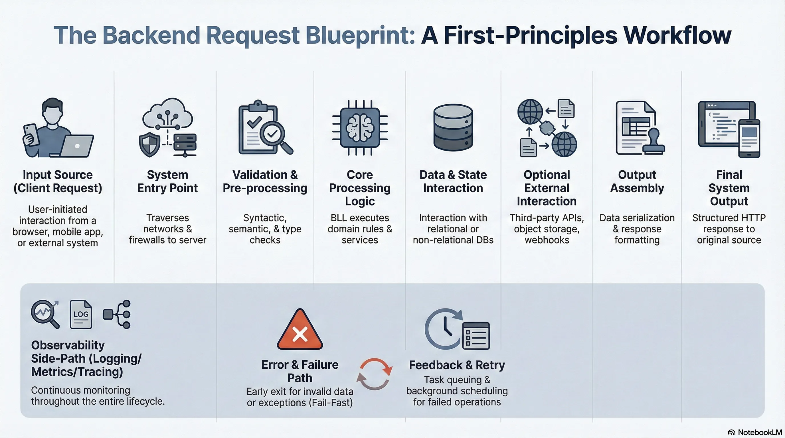

Overview

Introduction to Backend Engineering
- Definition: Backend engineering extends beyond building CRUD APIs. It involves building codebases and systems that are:
- Reliable
- Scalable
- Fault-tolerant
- Maintainable
- Efficient
- Learning Challenges:
- Extremely wide scope.
- Difficulty in prioritization and seeing the "big picture."
- Concepts often learned in isolation (college, bootcamps) leading to reliance on trial and error.
- Pitfalls of Language-First Learning:
- Starting with a specific framework (e.g., Express, Spring Boot, Ruby on Rails) creates "blind spots."
- Solutions are viewed through the lens of a specific ecosystem.
- Transferability issues: Knowledge is hard to transfer if underlying systems are not understood (e.g., migrating from Ruby on Rails to Golang for performance).
High-Level System Architecture
- Request Flow:
- Request originates from a browser.
- Travels through network hops and firewalls over the internet.
- Routed to a remote server (e.g., AWS).
- Server processes and responds.
- Core Understanding: Visualizing how clients communicate with servers and what the response looks like.
%%{init: {"theme": "dark", "themeVariables": {"primaryColor": "#1f2a33", "primaryTextColor": "#e6edf3", "primaryBorderColor": "#4b5563", "lineColor": "#9aa0a6", "secondaryColor": "#2b3a42", "tertiaryColor": "#202a33", "fontFamily": "Georgia, serif"}}}%%
flowchart LR
Browser[Browser] --> Hops[Network Hops]
Hops --> Firewalls[Firewalls]
Firewalls --> Server[Remote Server]
Server --> BrowserHTTP Protocol
- Communication: How connection is established.
- Raw Messages: Understanding the structure.
- HTTP Headers:
- Request Headers
- Representational Headers
- General Headers
- Security Headers
- HTTP Methods:
GET,POST,PUT,DELETE- Semantics and principles behind usage.
- CORS (Cross-Origin Resource Sharing):
- Pre-flight requests: Flow from browser to server and back.
%%{init: {"theme": "dark", "themeVariables": {"primaryColor": "#1f2a33", "primaryTextColor": "#e6edf3", "primaryBorderColor": "#4b5563", "lineColor": "#9aa0a6", "secondaryColor": "#2b3a42", "tertiaryColor": "#202a33", "fontFamily": "Georgia, serif"}}}%%
sequenceDiagram
participant Browser
participant Server
Browser->>Server: OPTIONS (Pre-flight)
Server-->>Browser: Pre-flight Response
Browser->>Server: Actual Request
Server-->>Browser: Response- HTTP Responses:
- Structure.
- Status Codes: When to return which code; common codes.
- HTTP Caching:
- Techniques:
ETags,max-ageheaders.
- Techniques:
- Versions:
- Differences between HTTP/1.1, HTTP/2.0, and HTTP/3.0.
- Content Negotiation: Using headers to determine content format.
- Persistent Connections: How they work.
- HTTP Compression:
- Techniques:
gzip,deflate,br. - Common usage.
- Techniques:
- Security:
- SSL/TLS.
- HTTPS.
Routing
- Definition: Mapping URLs to server-side logic.
- Components:
- Path parameters.
- Query parameters.
- Types of Routes:
- Static routes.
- Dynamic routes.
- Nested routes.
- Hierarchical routes.
- Catch-all / Wildcard routes.
- Regular expression-based routes.
- API Versioning:
- Techniques using HTTP.
- Best practices for deprecating routes.
- Route Grouping:
- Benefits for versioning.
- Permissions.
- Shared middleware.
- Optimization: Secure routes and route matching performance.
Serialization and Deserialization
- Definitions:
- Serialization: Translating native data to a network format before sending.
- Deserialization: Translating received network data back to native format.
- Role in interoperability standards.
- Formats:
- Text-based: JSON, XML (Trade-off: Readability vs Performance).
- Binary: Protobuf (Faster performance).
- JSON Deep Dive:
- Structure and Data Types: Strings, numbers, booleans, arrays, objects.
- Handling nested objects and collections.
- Deserialization to Native Structures:
- Python dictionaries.
- Golang structs.
- JavaScript objects.
- Common Errors:
- Missing or extra fields.
- Null values.
- Date serialization and time zone issues.
- Custom serialization implementation.
- Error Handling:
- Invalid data.
- Data conversion errors.
- Unknown fields.
- Security Concerns:
- Injection attacks.
- Validation before deserialization.
- JSON Schema validation.
- Performance:
- Reducing serialized data size (compression, eliminating unnecessary fields).
- Trade-offs between readability (text) and speed (binary).
Authentication and Authorization
- Concepts: Why they are used.
- Types of Authentication:
- Stateful vs. Stateless.
- Basic Authentication.
- Bearer Token Authentication.
- Components:
- Sessions.
- JWTs (JSON Web Tokens).
- Cookies.
- Protocols:
- OAuth.
- OpenID Connect.
- Mechanisms:
- API Keys.
- Multi-factor Authentication (MFA).
- Salting and Hashing.
- Cryptographic techniques.
- Access Control Models:
- ABAC (Attribute-Based Access Control).
- RBAC (Role-Based Access Control).
- ReBAC (Relationship-Based Access Control).
- Security Best Practices:
- Securing cookies.
- Avoiding CSRF, XSS, MITM (Man-in-the-Middle).
- Audit Logging: Recording events for audits, monitoring failed logins, privilege escalation, and access to sensitive resources.
- Obfuscation: Preventing information leakage through detailed error messages.
- Consistency: Handling failure modes (rate limiting, account lockout) consistently.
- Timing Attacks: Preventing attackers from inferring credentials based on response time differences (e.g., password hashing time vs. username lookup time).
Validation and Transformation
- Types of Validation:
- Syntactic: Format checks (Email, valid phone number, date format).
- Semantic: Logical checks (Date of birth not in future, age between 1-120).
- Type: Input matches expected type (String, Integer, Array, Object).
- Relationship: Comparing fields (Password vs. Confirm Password).
- Conditional: Requirements based on other fields (Partner name required if
married=true). - Chain: Sequential checks (Lower casing -> Remove special chars -> Check length).
%%{init: {"theme": "dark", "themeVariables": {"primaryColor": "#1f2a33", "primaryTextColor": "#e6edf3", "primaryBorderColor": "#4b5563", "lineColor": "#9aa0a6", "secondaryColor": "#2b3a42", "tertiaryColor": "#202a33", "fontFamily": "Georgia, serif"}}}%%
flowchart LR
Input[Input] --> Lowercase[Lower casing]
Lowercase --> RemoveChars[Remove special chars]
RemoveChars --> CheckLength[Check length]- Client vs. Server Side:
- Client: Improves UX (instant feedback).
- Server: True security gateway (essential for business logic protection).
- Principles:
- Fail Fast: Reduce unnecessary processing by returning early.
- Consistency between front-end and back-end logic.
- Transformation:
- Type Casting: Converting strings (from query/path params) to numbers/IDs.
- Date Formats: Standardizing timestamps.
- Normalization:
- Lowercasing emails.
- Trimming whitespace.
- Adding country codes.
- Sanitization: Preventing security issues like SQL injection.
- Error Handling:
- Meaningful messages for users.
- Aggregating errors (single response for client display).
- Obfuscation: Using "Invalid credentials" instead of "Invalid password".
- Handling failed transformations (Invalid JSON, failed date conversion).
- Performance: Optimize by returning early and avoiding redundant validations.
Middleware
- Definition: Code executing in the request cycle.
- Role: Pre-request processing or Post-response processing.
- Flow:
- Chaining: Executed in sequence.
- Control: Passing to
nextfunction or exiting early. - Short-circuiting: Handling errors (e.g., 404) immediately.
%%{init: {"theme": "dark", "themeVariables": {"primaryColor": "#1f2a33", "primaryTextColor": "#e6edf3", "primaryBorderColor": "#4b5563", "lineColor": "#9aa0a6", "secondaryColor": "#2b3a42", "tertiaryColor": "#202a33", "fontFamily": "Georgia, serif"}}}%%
flowchart LR
Request[Request] --> Logging[Logging]
Logging --> Auth[Authentication]
Auth --> Validation[Validation]
Validation --> Route[Route Handling]
Route --> Response[Response]
Validation -.-> ErrorHandling[Error Handling]- Ordering Importance:
- Logging.
- Authentication.
- Validation.
- Route Handling.
- Error Handling.
- Incorrect order affects performance and security.
- Common Middlewares:
- Security: Adding headers (
X-Content-Type,HSTS,Content Security Policy), CORS headers. - Protection: CSRF avoidance, Rate limiting.
- Authentication: Reusable route protection logic.
- Observability: Request logging, structured logging.
- Error Handling: Catching and formatting application-level errors.
- Compression: Reducing response body size.
- Data Parsing: Handling JSON, URL-encoded forms, file uploads (multipart).
- Security: Adding headers (
- Scalability: Keep lightweight and efficient.
Request Context
- Definition: Metadata and request-scoped state passed through layers (middleware, controllers, services).
- Lifecycle: Valid only for the duration of the request.
- Purpose: Sharing data without coupling.
- Components:
- Metadata: HTTP method, URL, headers, query params, body.
- User Info: Session/User details injected by Auth middleware.
- Tracking: Unique Request IDs, Trace IDs.
- Custom Data: Caching data, permission checks.
- Use Cases: Authentication, Rate limiting, Tracing, Logging.
- Timeouts:
- Request timeouts.
- Custom timeouts.
- Cancellation signals.
- Best Practices:
- Keep lightweight (prevent memory overhead).
- Clean up after request lifecycle (prevent memory leaks).
- Avoid tight coupling or over-reliance.
Handlers and Controllers
- Architecture: MVC Pattern (Handlers, Controllers, Services).
- Responsibilities:
- Centralized error handling.
- Consistent success/error message formats.
- CRUD Operations:
- POST: Creation/Submission (Status:
201 Createdor400 Bad Request). - GET: Fetching lists or single resources.
- PUT/PATCH: Updating resources.
- DELETE: Deleting resources.
- POST: Creation/Submission (Status:
- Implementation Details:
- Pagination.
- Search APIs.
- Sorting and Filtering.
- Best Practices:
- Strict validation.
- Consistent response formatting.
- Limiting payload.
- Redacting sensitive fields.
RESTful Architecture
- Principles: Designing APIs around resources and HTTP semantics.
- Versioning Types:
- URI versioning.
- Header versioning.
- Query string versioning.
- Media type versioning.
- Design Considerations:
- OpenAPI specification.
- Content Negotiation.
- Capturing exceptions with meaningful messages.
- Caching: Client-side support (ETags).
- Optimizing large requests/responses.
Databases
- Types: Relational vs. Non-relational (Differences and use cases).
- Theoretical Concepts:
- ACID properties.
- CAP theorem.
- Operations:
- Basic querying and joins.
- Design: Schema design, Indexing.
- Optimization:
- Query optimization.
- Caching.
- Connection pooling.
- Data Integrity:
- Constraints and validations.
- Transactions and concurrency.
- Tooling:
- ORMs: Trade-offs.
- Migrations: Managing schema changes.
Business Logic Layer (BLL)
- Role: The core layer between Presentation (handlers/routes) and Data Access (database).
- Design Principles:
- Separation of concerns.
- Single Responsibility.
- Open-Closed Principle.
- Dependency Inversion.
- Components:
- Services.
- Domain Models (Core entities like User, Order).
- Business Tools.
- Business Validation Logic.
- Best Practices:
- Service layer design.
- Proper error handling and propagation to presentation layer.
Caching
- Purpose: Difference from database persistence.
- Types:
- Memory caching.
- Browser caching.
- Database caching.
- Client-side vs. Server-side.
- Strategies:
- Cache aside.
- Write-through.
- Write-behind (Write-back).
- Read-through.
- Eviction Strategies:
- LRU (Least Recently Used).
- LFU (Least Frequently Used).
- TTL (Time To Live).
- FIFO (First In First Out).
- Invalidation:
- Manual.
- Time To Live (TTL).
- Event-based.
- Levels:
- Level 1: In-memory (Fast, Small).
- Level 2: Network distributed (Slower, Large).
- Hierarchical: Combining L1 and L2.
- Implementations:
- Web Apps: Static assets, API responses (headers).
- Databases: Query caching (e.g., storing heavy join results in Redis).
- Metrics: Optimizing Cache Hit vs. Cache Miss ratio.
Transactional Emails
- Use Cases: Common scenarios.
- Anatomy:
- Subject, Pre-header, Body header, Main content, CTA (Call to Action), Footer.
- Personalization: Dynamic parameters.
Task Queuing and Scheduling
- Task Queuing Use Cases:
- Sending emails.
- Processing image files.
- Third-party API integrations (Payment processing, Webhooks).
- Offloading heavy computation (Batch processing, e.g., "Clear all data" requests).
- Scheduling Use Cases:
- Database backups.
- Recurring notifications/reminders.
- Data synchronization.
- Maintenance (Clearing logs/caches).
- Components:
- Producer, Queue, Consumer, Broker, Backend.
%%{init: {"theme": "dark", "themeVariables": {"primaryColor": "#1f2a33", "primaryTextColor": "#e6edf3", "primaryBorderColor": "#4b5563", "lineColor": "#9aa0a6", "secondaryColor": "#2b3a42", "tertiaryColor": "#202a33", "fontFamily": "Georgia, serif"}}}%%
flowchart LR
Producer[Producer] --> Queue[Queue]
Queue --> Broker[Broker]
Broker --> Consumer[Consumer]
Consumer --> Backend[Backend]- Flow & Features:
- Dependencies: Chain dependency, Parent-Child relationships.
- Task Groups: Concurrent execution (waiting for all to complete).
- Reliability: Error handling, Retries.
- Control: Task prioritization (Payment > Notification), Rate limiting.
ElasticSearch
- Mechanisms:
- Inverted index.
- Term frequency & Inverse document frequency.
- Segments and Shards.
- Use Cases:
- Type-ahead experience.
- Log analytics.
- Social media search (User profiles, posts, comments).
- Management:
- Creating/Managing indexes.
- Defining field mappings explicitly.
- Searching:
- Basic vs. Full-text search.
- Relevance scoring.
- Optimization: Text vs. Keyword fields, Analyzers, Boosting, Pagination.
- Advanced Patterns: Filtering, Aggregation, Fuzzy search.
- Tooling: Kibana (User-friendly interface).
- Best Practices:
- Optimizing shard numbers.
- Indexing in batches.
- Avoiding wildcards.
Error Handling
- Types of Errors: Syntax, Runtime, Logical.
- Strategies:
- Fail-safe vs. Fail-fast.
- Graceful degradation.
- Prevention.
- Practices:
- Catching early (don't swallow errors).
- Custom error types.
- Failing gracefully.
- Logging with stack traces.
- Global error handlers.
- User-Facing: Friendly messages, Actionable feedback.
- Monitoring:
- Tools: Sentry, ELK stack.
- Alerts: Email, Slack.
Config Management
- Definition: Decoupling environment-specific settings from logic.
- Use Cases:
- Different environments.
- Managing sensitive data (API keys, DB passwords, Certificates).
- Feature flags (Dynamic enabling/disabling).
- Types of Configs:
- Static: DB credentials, Endpoints.
- Dynamic: Feature flags, Rate limits.
- Sensitive: Credentials, Tokens, Secrets.
- Sources:
.envfiles, JSON, YAML. - Comparison: Environment variables vs. Command line flags vs. Static files.
Logging, Monitoring, and Observability
- Logging:
- Types: System, Application, Access, Security.
- Levels:
Debug,Info,Warn,Error,Fatal. - Format: Structured vs. Unstructured.
- Best Practices: Centralized logging, Rotation/Retention, Contextual logs, Avoiding sensitive data.
- Monitoring:
- Types: Infrastructure, Application Performance (APM), Uptime.
- Tools: Prometheus, Grafana.
- Alerts: Defining thresholds, Avoiding "alert fatigue" (ensure alerts are actionable/meaningful).
- Observability:
- Three Pillars: Logs, Metrics, Traces.
- Security and compliance of log management.
Graceful Shutdown
- Need: Server restarts, Cloud scaling, Microservices, Long-running jobs.
- Mechanism:
- Signal handling:
SIGTERM,SIGINT,SIGKILL.
- Signal handling:
- Steps:
- Capture signal.
- Stop accepting new requests.
- Complete in-flight requests.
- Close external resources (DB connections, open files).
- Terminate app.
Security
- Attack Prevention:
- SQL Injection, NoSQL Injection.
- XSS (Cross-Site Scripting).
- CSRF (Cross-Site Request Forgery).
- Broken Authentication.
- Insecure Deserialization.
- Design Principles:
- Least privilege.
- Defense in depth.
- Fail secure.
- Defaults.
- Separation of duties.
- Security by design.
- Mechanisms:
- Input validation and sanitization.
- Rate limits.
- Content Security Policy (CSP).
- CORS.
- SameSite cookies.
- Monitoring events.
Scaling and Performance
- Metrics: Response time, Resource utilization.
- Bottlenecks: Identifying issues.
- Database Optimization:
- Avoiding N+1 query problems.
- Proper use of Joins.
- Lazy loading.
- Indexes: Foreign keys, Search fields.
- Batch processing for large datasets.
- Resource Management:
- Avoid memory leaks (closing handles/connections).
- Minimize network overhead (payload size, compression).
- Testing: Performance testing and profiling.
- Best Practices:
- Write clear/maintainable code first (avoid premature optimization).
- Modular code for individual optimization.
- Graceful Degradation: System survives if resources are unavailable.
- Offloading: Move non-critical tasks (Email, Logging) to background queues.
Concurrency and Parallelism
- Differences:
- Concurrency: Helps in I/O bound tasks.
- Parallelism: Helps in CPU bound tasks.
Object Storage and Large Files
- Object Storage: AWS S3 usage.
- Large File Management:
- Chunking.
- Streaming.
- Multipart file uploads.
Real-time Backend Systems
- Technologies:
- WebSockets.
- Server-Sent Events (SSE).
- Architecture: Pub/Sub.
Testing and Code Quality
- Types of Testing:
- Unit, Integration, End-to-End (E2E).
- Functional, Regression.
- Performance, Load, Stress.
- User Acceptance Testing (UAT).
- Security testing.
- Methodologies: Test Driven Development (TDD).
- Automation: Tests in CI/CD environments.
- Code Quality:
- Linting and Formatting tools.
- Cyclomatic Complexity: Measures complexity by counting possible paths.
- Maintainability Index: Quantifies ease of maintenance based on complexity/lines of code.
Factor App
- Set of principles for building software-as-a-service apps.
OpenAPI Standards
- Benefits:
- Standardization.
- Documentation Automation.
- Ecosystem: Swagger, Codegen, Postman.
- History: Swagger to OpenAPI transition.
- Key Concepts (Document Structure):
- API Paths.
- Request/Response definitions.
- Parameters and Schemas.
- Metadata, Components, Security definitions.
- Versions: Features of 3.0 and 3.1.
- Tools: Swagger UI, Codegen, Postman.
- API First Development: Defining spec first, then creating APIs.
Webhooks
- Use Cases: Notifications, Third-party integrations.
- Comparison:
- API: Polling (Client-initiated).
- Webhooks: Pushing (Server-initiated).
- Components:
- Webhook URL.
- Event triggers.
- Payload.
- HTTP Method.
- Response handling.
- Best Practices:
- Signature verification.
- Using HTTPS.
- Quick response.
- Retry logic.
- Logging.
- Testing with tools like Ngrok.
- Examples: Stripe Payment Processing, GitHub, Slack, Discord, Twilio.
DevOps Concepts
- Core Concepts:
- Continuous Integration (CI).
- Continuous Delivery (CD).
- Continuous Deployment.
- Practices:
- Infrastructure as Code (IaC).
- Config Management.
- Version Control.
- Tools:
- Containers: Docker.
- Orchestration: Kubernetes.
- CI/CD Pipelines.
- Scaling: Horizontal vs. Vertical.
- Deployment Strategies:
- Red-Green Deployment.
- Rolling Deployment.
Complete Overview Roadmap
%%{init: {"theme": "dark"}}%%
flowchart TD
A["Overview"] --> B["Introduction to Backend Engineering"]
B --> C["High-Level System Architecture"]
C --> D["HTTP Protocol"]
D --> E["Routing"]
E --> F["Serialization and Deserialization"]
F --> G["Authentication and Authorization"]
G --> H["Validation and Transformation"]
H --> I["Middleware"]
I --> J["Request Context"]
J --> K["Handlers and Controllers"]
K --> L["RESTful Architecture"]
L --> M["Databases"]
M --> N["Business Logic Layer (BLL)"]
N --> O["Caching"]
O --> P["Transactional Emails"]
P --> Q["Task Queuing and Scheduling"]
Q --> R["ElasticSearch"]
R --> S["Error Handling"]
S --> T["Config Management"]
T --> U["Logging, Monitoring, and Observability"]
U --> V["Graceful Shutdown"]
V --> W["Security"]
W --> X["Scaling and Performance"]
X --> Y["Concurrency and Parallelism"]
Y --> Z["Object Storage and Large Files"]
Z --> AA["Real-time Backend Systems"]
AA --> AB["Testing and Code Quality"]
AB --> AC["12 Factor App"]
AC --> AD["OpenAPI Standards"]
AD --> AE["Webhooks"]
AE --> AF["DevOps Concepts"]
classDef level1 fill:#2d2d2d,stroke:#444444,color:#ffffff
classDef level2 fill:#3a3a3a,stroke:#555555,color:#ffffff
class A level1
class B,C,D,E,F,G,H,I,J,K,L,M,N,O,P,Q,R,S,T,U,V,W,X,Y,Z,AA,AB,AC,AD,AE,AF level2